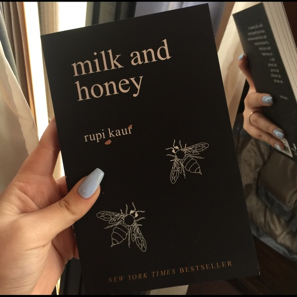
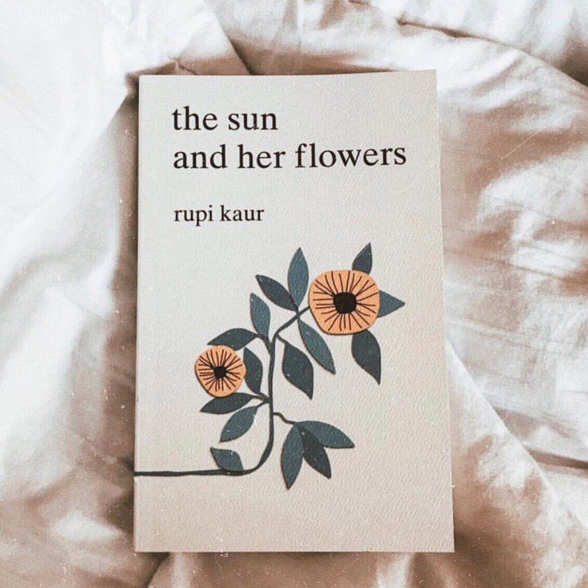

RUPI KAUR
The Greatest of All Time
A #1 New York Times bestselling author and illustrator, Rupi's collections of poetry
touches heavily on love, loss, trauma, healing, feminism, and migration.
Background
At just four years old, Kaur immigrated with her family from Punjab, India to Brampton, Canada.
Being a kid in Canada, where she did not know the English language as well as others, felt a lot more lonely.
Without friends, she came to love reading books. Following the steps of her mother, she began to draw and paint
at the age of 5 up until the age of 17. Soon, she began to have a passion for writing and performing instead.
Kaur recieved fame on Instagram and Tumblr through sharing her short visual poetry. Her work is made from the inspiration
of Sikh scripture.

In 2014, when Kaur was 21 and still a university student, she wrote, illustrated, and self-published her first poetry collection, milk and honey.
This collection has sold two and a half million copies internationally. milk and honey is a collection of poetry and prose
about survival, violence, abuse, love, loss, and feminity. Divided into four chapters, each part serves a specific purpose.
A famous quote from the book itself: "the world gives you so much pain and here you are making gold out of it
- there is nothing purer than that"

In 2017, Kaur published her second collection of poetry: The Sun and Her Flowers. It is divided into five chapters with illustrations drawn by herself.
Following the debut of milk and honey, Kaur found it difficult to find this book to meet her higher expectations. The goal throughout the writing process
focused on "the corrective experience" that occurs in unhealthy relationships. A lot of the book is showing the message to love yourself and live life to
its best. Since June 2018, the book has sold over three million copies and has been
translated into more than 35 languages. A famous quote from the book itself: “what is the greatest lesson a woman should learn
that since day one
she's already had everything she needs within herself
it's the world that convinced her she did not”
Impact
In the world of the 21st century, women are still fighting chauvinism. Kaur's work and message has become widely famous for young women to fight against this
and succeed. The core of her work is human dignity. Personal growth and global growth is still a challenge everyone in this world is facing. Kaur shares stories with
us that allows us to know that we are not alone in this. She teaches us that this journey of growth can be and fighting challenges can be hard, but it can be done.
Kaur is empowering women to climb those mountains higher. Kaur has recieved criticism for her work being too "simplistic".
Instead, Kaur wanted to do something more accessable. She justifies her reason for this: “I’ve realized, it’s not the exact content that people connect with. People will understand and
they’ll feel it because it all just goes back to the human emotion. Sadness looks the same across all cultures, races, and communities. So does happiness and joy.”
She has worked with others to endorse, perform, and lead, including Canadian Member of Parliament, Jagmeet Singh.
Check out her profile:
Rupi Kaur!